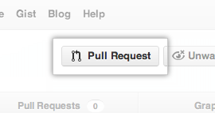

Intro to Git
02.06.16 ∙ GDI MPLS ∙ Amy Gebhardt

What is version control and
why should we even care?
Get you and your computer set up.
Basics of git -- the essential commands
"Gitting" social with GitHub
Version Control Vocabulary
REPOSITORY
Contains all of the project files and stores a revision history. Think of them as project folders.
CLONE
A copy of a repository that lives on your computer. This copy will keep track of your changes and allow you to "push" those to the remote repository.
COMMIT
A change to a file or set of files. Think of this as "saving" a file. Usually has a message that goes along with it.
GIT
A program for tacking changes in files.
Install & Setup Git
Get started with the command line.
On a Mac:
Open "Terminal"
Type "git" and hit enter.
On Windows:
Open "Git Bash"
Type "git" and hit enter.
SSH KEYS
A way to identify and trust your computer
without having to type in a password.
Check for SSH keys on your computer:
/ls -al ~/.ssh
Generate a new SSH key:
ssh-keygen -t rsa -C "your_email@example.com"
Generating public/private rsa key pair.
Enter file in which to save the key (/Users/you/.ssh/id_rsa): [Press enter]
Enter passphrase:
Enter passphrase (empty for no passphrase):[Type a passphrase]
Enter same passphrase again: [Type passphrase again]
So far so good?
Your identification has been saved in /Users/you/.ssh/id_rsa.
Your public key has been saved in /Users/you/.ssh/id_rsa.pub.
The key fingerprint is:
01:0f:f4:3b:ca:85:d6:17:a1:7d:f0:68:9d:f0:a2:db your_email@example.com
Add your SSH key to your account:
pbcopy < ~/.ssh/id_rsa.pub
clip < ~/.ssh/id_rsa.pub
Setup gitconfig:
git config --global user.name "your name"
git config --global user.email "your_email@example.com"
Make sure everything looks right!
git config --list
Create your first repository
Go to your home directory:
cd ~/
Create a working directory:
mkdir my_first_repo
cd my_first_repo
Initialize with Git:
git init
git status
Create a new hello_world.txt file in your
new my_first_repo directory.
Check the repo status:
git status
Tell Git to track this new file:
git add hello_world.txt
Check the repo status:
git status
Time to make some changes.
Open the hello_world.txt file and add some text.
Check the repo status:
git status
Stage and commit the change:
git add hello_world.txt
git commit -m "My first commit! Added hello_world to my repo."
Check the repo status:
git status
Wait... so what did we just do?
When we add a new file, we tell Git to add
the file to the repository to be tracked.
When we stage an existing file (also using 'add'), we tell Git to track
the current state of our file.
A commit saves the changes made to a file - not
the file as a whole. The commit will have a "hash" so we can track which changes were committed when and by whom.
Our Progress:
git log
commit [HASH]
Author: [your name]
Date: [commit date]
[ commit message ]
Undo Changes
Nobody's perfect.
Sometimes you'll want to "undo" or
"revert" some changes you've made.
Go make some changes to hello_world.txt.
Add a line of text like "testing out undoing local changes!"
Check the repo status:
git status
Tell Git to discard the changes made to hello_world.txt:
git checkout hello_world.txt
What does hello_world.txt look like now?
But what if you've already staged these changes?
Go make some more changes to hello_world.txt.
Add a line of text like
"testing out undoing staged changes!"
Stage the change:
git add hello_world.txt
Confirm the repo status:
git status
Tell Git to undo the add and to discard the changes made to hello_world.txt:
git reset HEAD hello_world.txt
git checkout hello_world.txt
What does hello_world.txt look like now?
But what if you've already staged and committed these changes?
Go make some more changes to hello_world.txt.
Add a line of text like
"testing out undoing committed changes!"
Stage & commit the change:
git add hello_world.txt
git commit -m "Committing some stuff."
Print out the repo log:
git log
Tell Git to revert the commit:
git revert [HASH]
What does hello_world.txt look like now?
Branching
Same repo, different branch:
The master branch is left alone:
Use the branch when you're ready:
Branch:
The "master" branch:
Create a new branch:
git checkout -b version2
Go make some changes to hello_world.txt.
Stage and commit the change:
git add hello_world.txt
git commit -m "Adding changes to version 2."
See all branches for the current repository.
git branch
Switch back to master.
git checkout master
Switch back to version2.
git checkout version2
Pretty neat, right?
But how do you combine the branches?
Merging
Merge to get changes from one branch to another:
Collaboration at its best!
Switch to master:
git checkout master
Merge with version2:
git merge version2
There will be conflicts.
Git is pretty smart, but sometimes it won't know exactly how to merge your branches.
For example...
Git will make you resolve this conflict before the merge can happen.
Make sure you're in master:
git checkout master
Change the first line of hello_world.txt.
Stage and commit this change:
git add hello_world.txt
git commit -m "Changing the first line of hello_world.txt in master."
Switch to version2:
git checkout version2
Change the first line of hello_world.txt.
Stage and commit this change:
git add hello_world.txt
git commit -m "Changing the first line of hello_world.txt in version2."
Merge from master into version2:
git merge master
You should see something like:
CONFLICT (content): Merge conflict in hello_world.txt
Solving conflicts:
Be on your way:
git add hello_world.txt
git commit -m "Fixing the first line of hello_world.txt in master."
GitHub
Launched in 2008.
Leader in social coding.
GitHub is a commercial site that allows users to host Git repositories publicly and privately.
Open source projects host or mirror their repos on GitHub.
Post your own code for others to use or contribute to.
Your first GitHub Repo
README
"While a README isn't a required part of a GitHub repository, it is a very good idea to have one.
READMEs are a great place to describe your project or
add some documentation such as how to install
or use your project. You might want to include contact information - if your project becomes
popular
people will want to help you out."
More Version Control Vocabulary
REMOTE
This is the version of a repository that is hosted on a server, like GitHub.
FETCH
This is when you get the latest changes from an online repository without merging them in.
PULL
This step combines fetching and merging changes from a remote repository.
PUSH
Sends your committed changes to a remote repository.
Your first GitHub Repo
Because Git is distributed, you'll want to get a local copy of your GitHub repository.
Go back to your root directory and make a new directory:
cd ../
mkdir hello_github
cd hello_github
Initialize with Git & add a remote:
git init
git remote add origin git@github.com:username/NAME-OF-REPO
Pull changes from the origin remote, master branch and merge them to your local branch:
git pull origin master
Open and edit the README file.
Stage, commit & push:
git add README
git commit -m "Updating readme file"
git push origin master
What does your README look like on GitHub?
Forking
There are millions of public repos on GitHub.
If you want to use or contribute to
a repository, you can fork it.
This will make a personal copy of another user's repository that will live on your account. While you can work with it and make changes without affecting the original repository, it is still
attached, making it easy for you to contribute back to the original when you're ready.

Pull Requests
After you fork and clone a repo, all pushed changes will go to your fork.
These changes will not affect the original repo.
If you want to get your changes to be incorporated in the original repo, you
can submit a pull request.

Thanks for coming!
We want your feedback:
tinyurl.com/gdiMpls
Upcoming Classes:
10/10 & 10/11 : Advanced HTML/CSS
10/24 & 10/25 : Intro to JavaScript